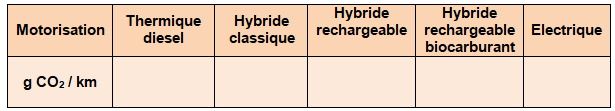

IMPORTANCE DU SERVICE RENDU ET COMPETITIVITE
- A partir du document « impacts énergétiques et environnementaux des transports » Expliquer Pourquoi il est urgent de changer la technologie de nos moyens de transport en France.
- En utilisant le graphique, calculer la part d’émissions de CO2 correspondant aux déplacements des personnes
- A partir du document «Bilan carbone du véhicule électrique» indiquer, dans un contexte de développement durable l’avantage principal du véhicule électrique sur le véhicule à moteur thermique?
Expliquer la différence qu’il y a ente les deux notions de « Well To Wheel » et « from Socket to Wheel »
- Spécifier le niveau d’émission de CO2 moyen selon les différentes motorisations utilisée en France.

-Expliquer les différences d’émission de CO2 constatée selon les zones géographiques (UE, F, All etc…) d’utilisation des voitures électriques. (Voir la définition de mix énergétique sous le tableau)
- Selon vous, quels sont les freins à l'achat d’un véhicule électrique ces dernières années?
- A l'aide des documents « Un choix rationnel pour le client (cliquer)» et « Stratégie (cliquer)» indiquez ce que la société Renault et le gouvernement ont mis en place pour lever ces freins?
Created with the Personal Edition of HelpNDoc: Easily create iPhone documentation